Ringkasan Singkat untuk Peneliti (4 Poin Utama)
1. Filosofi Kimia Hijau PASE: Reaksi one-pot fusi termal tanpa pelarut (solvent-free) dan tanpa katalis logam berhasil menyatukan cincin heterosiklik piridotetrazin dan azepin dengan rendemen tinggi (67–89%) dalam waktu 2–3 jam.
2. Selektivitas Sitotoksisitas NCI-60: Skrining pada 60 lini sel kanker manusia membuktikan Senyawa 9 memiliki hambatan pertumbuhan kuat 77.94% pada kanker kolon HCT-116 dan 51.58% pada leukemia RPMI-8226.
3. Penambatan Enzimatik JAK2: Senyawa 9 tertambat kuat pada kantung pengikatan ATP kinase JAK2 (-7.25 kcal/mol) dengan jaringan ikatan hidrogen Glu930 dan Leu932, setara ligan klinis referensi 2HB (-7.45 kcal/mol).
4. Orbital Kuantum DFT & ADME Bebas Resistensi: Celah HOMO–LUMO yang sangat sempit (0.0875 eV) menunjukkan tingginya reaktivitas transfer elektron molekul, lolos Aturan Lipinski tanpa menjadi substrat pompa efluks P-glikoprotein.
01. Tantangan Resistensi Kanker & Urgensi Scaffold Piridotetrazin
Cincin heterosiklik yang kaya akan atom nitrogen merupakan inti dari lebih dari 75% molekul obat onkologi modern yang telah disetujui badan regulasi dunia. Di antara berbagai arsitektur nitrogen, kerangka piridina, 1,2,4,5-tetrazin, serta cincin beranggota tujuh azepin (triazepin dan tetrazepin) menempati posisi istimewa berkat kemampuannya membentuk ikatan hidrogen multipel, berinteraksi pi-pi dengan residu enzim, dan menembus membran biologis dengan efisiensi tinggi.
Namun, sintesis cincin tetrazin dan azepin terpadu (fused bridgehead heterocycles) selama berpuluh-puluh tahun dihadapkan pada tantangan berat: reaksi multitahap yang rumit, penggunaan pelarut organik beracun yang boros, kebutuhan katalis logam berat yang mahal, serta rendemen akhir yang rendah. Untuk menjawab tantangan kimia hijau abad ke-21, tim peneliti gabungan Fakultas Sains dan Farmasi Al-Azhar University, Kairo, Mesir (Aisha Y. Hassan, Sara N. Shabaan, Samiha A. El-Sebaey, dan dipimpin oleh Dr. Eman S. Abou-Amra) mengadopsi filosofi Pot, Atom, and Step Economy (PASE).
Konsep PASE bertujuan memangkas jumlah tahapan sintetis dengan menggabungkan bahan awal dalam satu wadah reaksi (one-pot) pada kondisi bebas pelarut (solvent-free thermal fusion) tanpa memerlukan penambahan katalis eksternal. Pendekatan ramah lingkungan ini menghasilkan perpustakaan senyawa heterosiklik baru dalam waktu reaksi singkat (2–3 jam) dengan rendemen isolasi sangat tinggi (67–89%).
02. Arsitektur Kimia Hijau: Dari Piridinakarbonitril Menuju Tetrazin & Azepin
Blok pembangun utama (versatile building block) yang dirancang dalam riset ini adalah 1-amino-4-metil-2-oxo-6-fenil-1,2-dihidropiridina-3-karbonitril (1). Molekul ini memiliki reaktivitas bifungsional ganda yang sangat kaya: gugus amina primer nukleofilik (-NH₂), gugus karbonil elektrofilik (C=O), serta gugus siano orto (-C≡N) yang siap mengalami anelasi cincin heterosiklik.

Dari bahan awal 1, tim peneliti mengembangkan empat rute anelasi cincin berlainan ukuran (Gambar 1, 2, dan 3):
- Anelasi Triazolopiridina dan Azepin (Gambar 1): Fusi 1 dengan sianoguanidina pada 150–170 °C menghasilkan triazolopiridina 2 (rendemen 79%). Di sisi lain, kondensasi dengan asam antranilat binukleofilik melahirkan sistem cincin trisiklik (6:7:6) benzopiridotriazepina 5 (rendemen 78%). Alkilasi 1 dengan kloroaseton menghasilkan rantai terbuka 3, yang ketika difusikan dengan fenilhidrazina menutup menjadi cincin tujuh piridotetrazepina 4 (rendemen 72%).
- Anelasi [3+3] dan [5+1] Piridotetrazin (Gambar 2): Reaksi fusi bebas pelarut antara 1 dengan tiosemikarbazida melalui anelasi [3+3] melahirkan 3-aminopirido[1,2-b][1,2,4,5]tetrazina 7 dengan rendemen spektakuler 89% via eliminasi H₂O dan H₂S. Sebaliknya, fusi dengan hidrazinakarbonitril menghasilkan tautomer 3-iminopiridotetrazina 6 (67%). Keberadaan gugus amina primer orto pada tetrazin 7 dimanfaatkan sebagai jembatan anelasi sekunder: fusi dengan dietil malonat menghasilkan dihidropirimidinon 8 (rendemen 78%), sedangkan fusi dengan fenasil bromida atau dietil oksalat menghasilkan cincin imidazopiridotetrazin 9 (rendemen 85%) dan 10 (rendemen 74%).
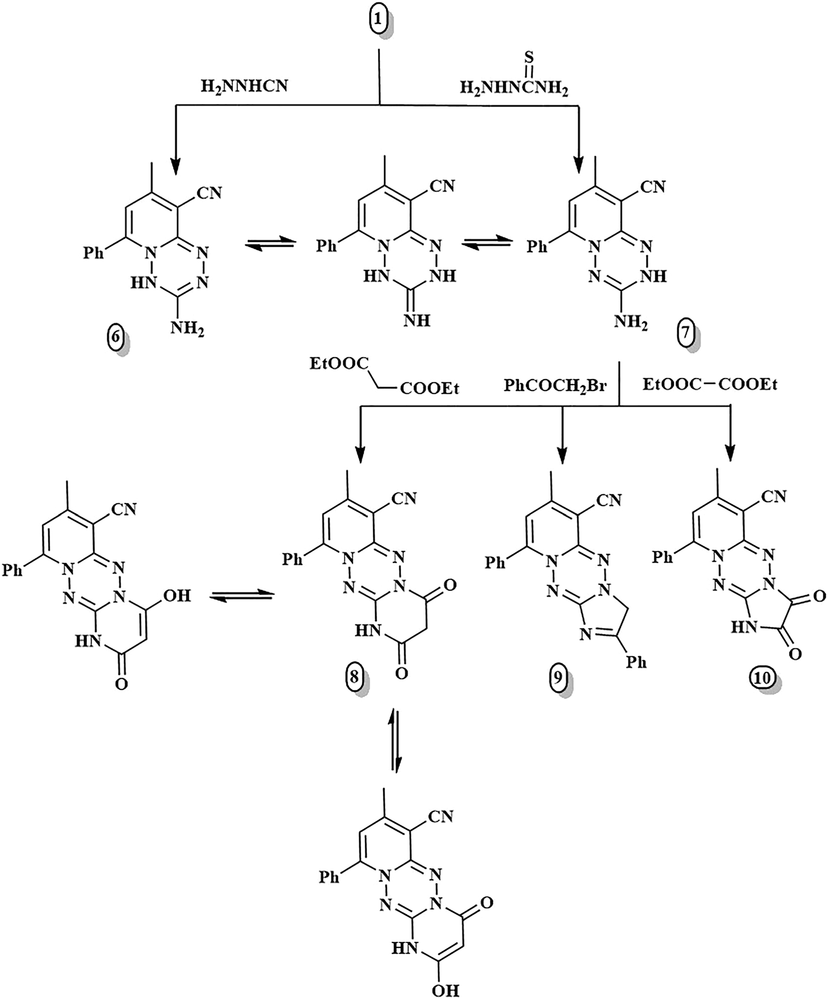
Rute ketiga memanfaatkan derivat hidrazon 11 yang diperoleh dari hidrazinolisis langsung senyawa 1. Fusi 11 dengan fenilisotiosianat membentuk piridotetrazin 12 (rendemen 71%), sementara fusi dengan alfa-halo karbonil (kloroaseton dan fenasil bromida) menghasilkan piridotetrazepin cincin tujuh 13 (83%) dan 14 (86%). Fusi dengan dietil oksalat menghasilkan tetrazepindion 15 (86%), serta kondensasi dengan 3,4-dimetoksibenzaldehida membentuk basa Schiff 16 (88%).
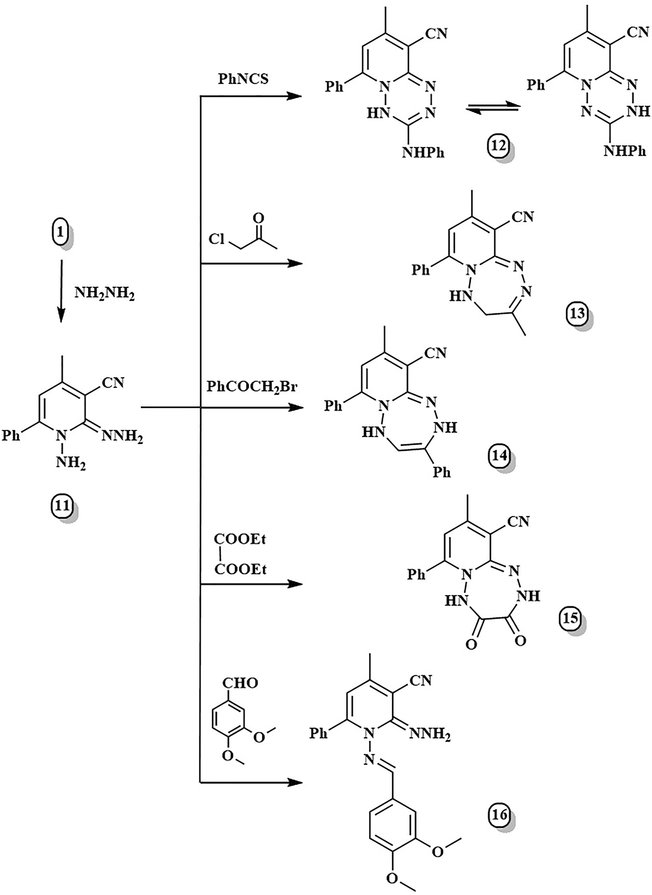
03. Uji Aktivitas Antikanker NCI-60 (National Cancer Institute, USA)
Sebanyak dua belas kandidat senyawa heterosiklik terpadu (2, 4, 5, 7–10, 12–16) terpilih oleh Developmental Therapeutics Program (DTP) National Cancer Institute (NCI, Bethesda, Maryland, AS) untuk dievaluasi aktivitas sitotoksik in vitro pada panel 60 lini sel kanker manusia (NCI-60) pada dosis tinggi tunggal 10⁻⁵ M (10 µM).
Panel NCI-60 mencakup 9 spektrum keganasan manusia: leukemia, kanker paru non-sel kecil (NSCLC), kanker kolon, kanker sistem saraf pusat (CNS), melanoma, kanker ovarium, kanker ginjal (renal), kanker prostat, dan kanker payudara. Hasil penghambatan pertumbuhan sel (Growth Inhibition / GI%) dianalisis menggunakan diagram sunburst dan grafik batang radial (Gambar 4 dan 5).
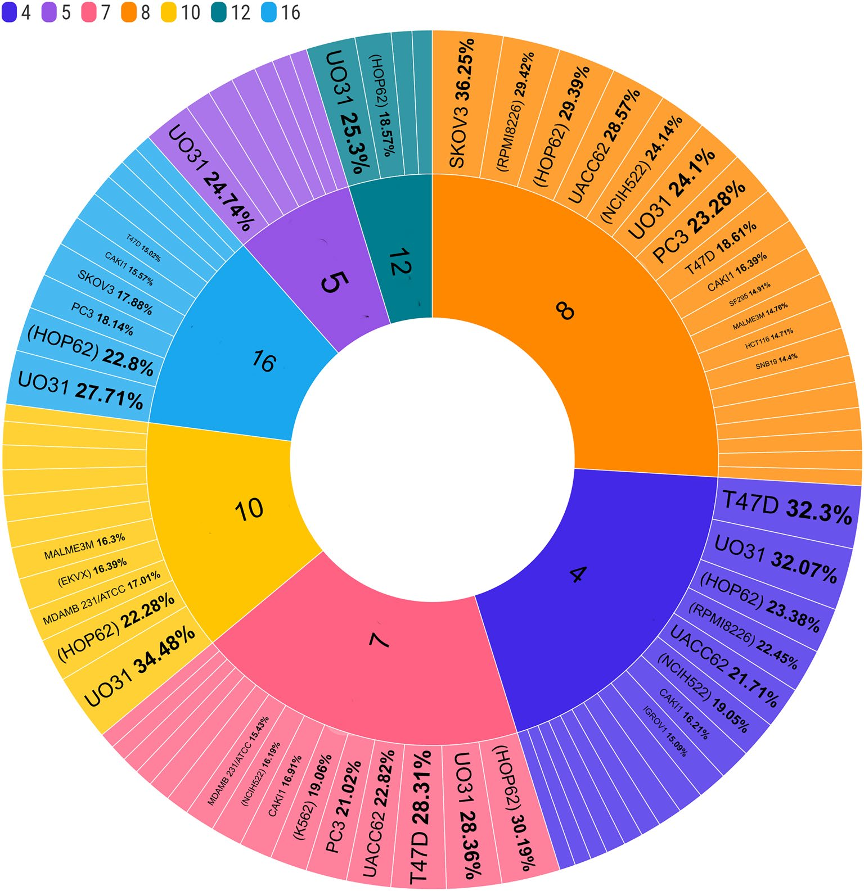
15%)" class="w-full h-auto cursor-zoom-in rounded border border-editorial-line/60" onclick="openLightbox(this.src, this.alt)" >Di antara seluruh senyawa yang diuji, tiga kandidat tampil dengan potensi antikanker paling superior: Senyawa 4, 8, dan 9.
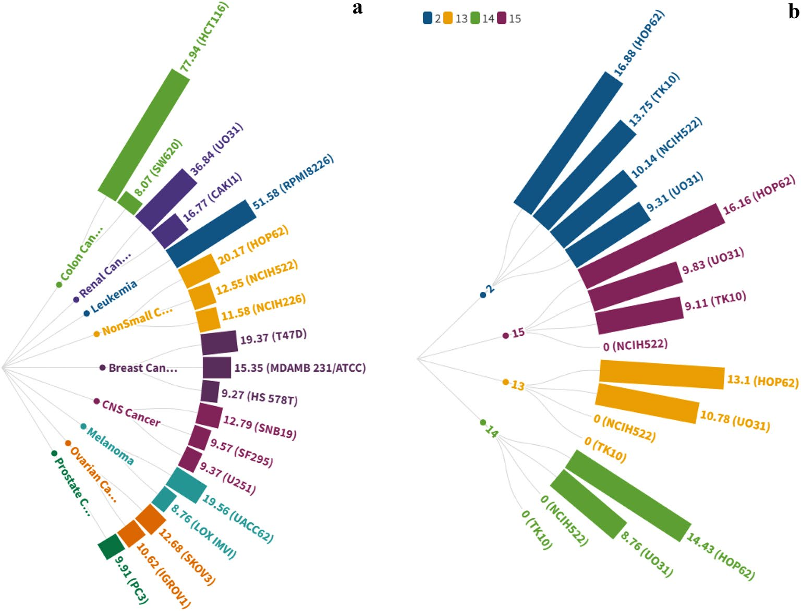
Sorotan efikasi sitotoksik paling menonjol pada panel NCI meliputi:
- Senyawa 9 (Imidazopiridotetrazin): Menjadi "juara" sitotoksisitas dengan menghambat pertumbuhan sel kanker kolon HCT-116 sebesar 77.94% GI dan sel leukemia RPMI-8226 sebesar 51.58% GI. Selain itu, senyawa ini juga aktif melawan kanker renal UO-31 (36.84% GI) dan melanoma UACC-62 (19.56% GI).
- Senyawa 8 (Piridopirimidinotetrazin): Menunjukkan efikasi luar biasa pada kanker ovarium SK-OV-3 (36.25% GI), leukemia RPMI-8226 (29.42% GI), kanker paru HOP-62 (29.39% GI), dan melanoma UACC-62 (28.57% GI).
- Senyawa 4 (Piridotetrazepin): Sangat aktif pada kanker payudara T-47D (32.30% GI), kanker ginjal UO-31 (32.07% GI), serta kanker paru HOP-62 (23.38% GI).
04. Penambatan Molekuler pada Janus Kinase-2 (JAK2, PDB ID: 4P7E)
Untuk memahami mekanisme molekuler di balik aktivitas sitotoksik senyawa 4, 8, dan 9, para peneliti melakukan studi penambatan molekuler (molecular docking) menggunakan perangkat lunak MOE (Molecular Operating Environment). Enzim target yang dipilih adalah Janus Kinase-2 (JAK2) (kode PDB: 4P7E), suatu tirosin kinase sitoplasmik yang memainkan peran sentral dalam jalur sinyal JAK-STAT. Hiperaktivitas JAK2 diketahui memicu proliferasi tak terkendali pada leukemia, limfoma, mieloma, serta berbagai tumor padat.
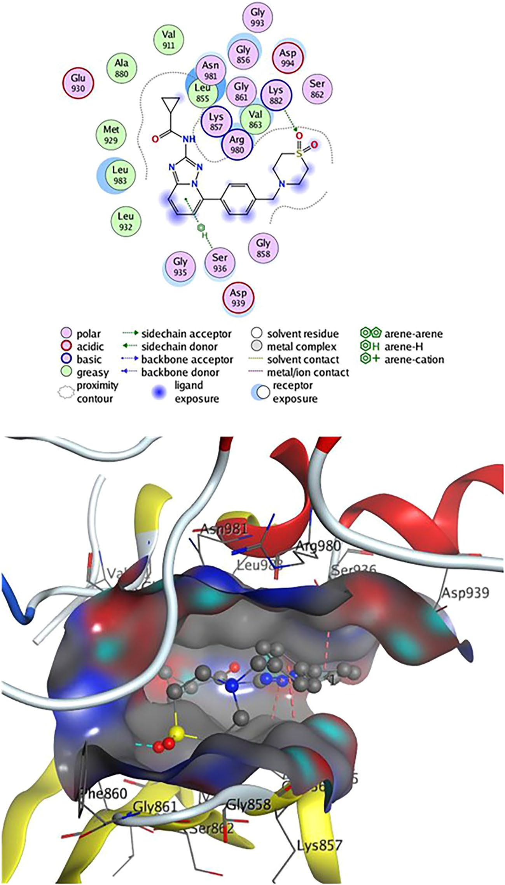
Validasi protokol docking dilakukan dengan menambat-ulang (re-docking) ligan ko-kristal referensi 2HB, yang menghasilkan skor energi pengikatan S = -7.45 kcal/mol. Penambatan senyawa uji 4, 8, dan 9 ke dalam kantong katalitik JAK2 mengungkap interaksi yang sangat kompetitif:
| Senyawa | Skor Energi (S) | Residu Ikatan H | Panjang Ikatan (Å) | Residu Interaksi Arene / Pi-H |
|---|---|---|---|---|
| Ligan 2HB (Referensi) | -7.45 kcal/mol | Lys 882 (gugus SO₂) | 3.31 Å | Gly 856, Ser 936, Leu 855 |
| Senyawa 9 | -7.25 kcal/mol | Val 911 (gugus C≡N) | 3.93 Å | Leu 855, Ser 936, Val 863, Leu 983 (8 kontak arene-H) |
| Senyawa 4 | -7.24 kcal/mol | Leu 932 (C≡N), Met 929 (CH₃) | 2.78, 3.23, 3.91 Å | Leu 855, Val 863, Leu 983 (7 kontak arene-H) |
| Senyawa 8 | -6.56 kcal/mol | Leu 932 (C≡N), Leu 855 (N-tetrazin) | 2.79, 2.26, 3.92 Å | Leu 855, Val 863, Leu 983 (6 kontak arene-H) |
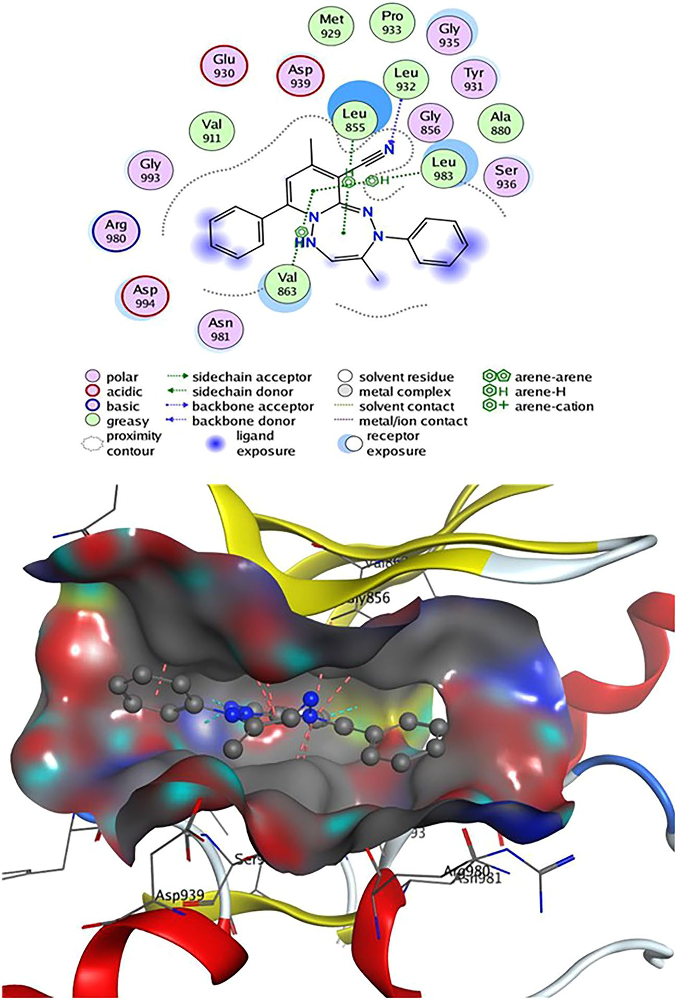
Senyawa 9 (Gambar 9) menunjukkan skor energi afinitas pengikatan S = -7.25 kcal/mol yang hampir identik dengan obat referensi 2HB (-7.45 kcal/mol). Cincin imidazopiridotetrazin yang pipih dan terkonjugasi penuh memfasilitasi delapan interaksi arene-H sekaligus dengan dinding kantong hidrofobik JAK2 (Leu 855, Ser 936, Val 863, dan Leu 983), sementara gugus siano (-C≡N) bertindak sebagai akseptor ikatan hidrogen dengan residu Val 911.
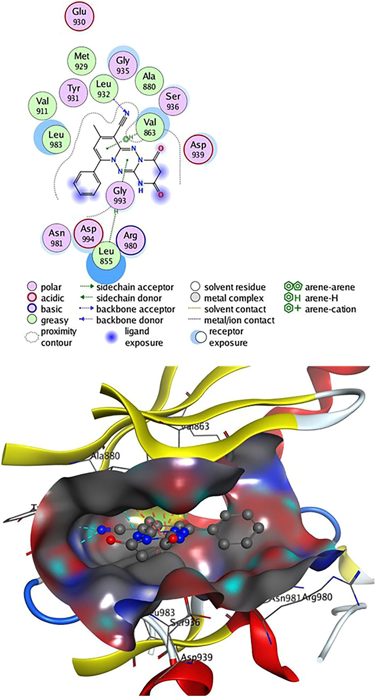
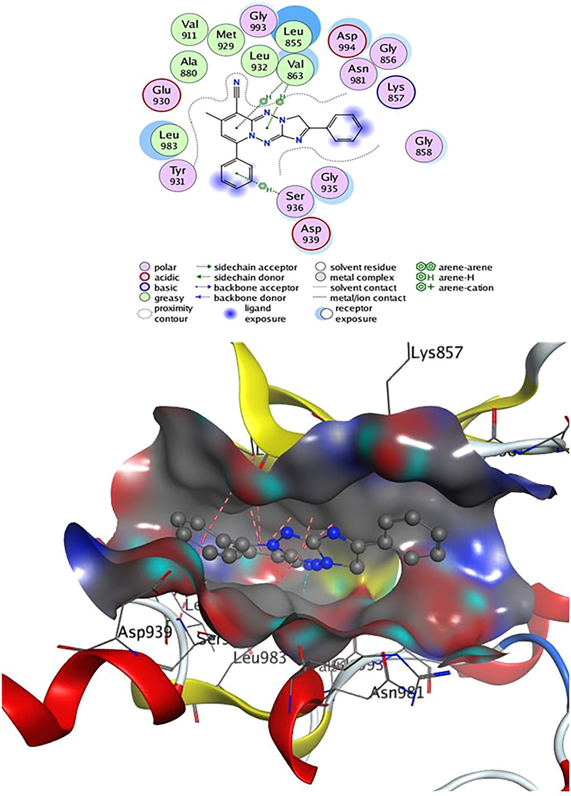
05. Kalkulasi Kuantum DFT: Orbital Molekuler Perbatasan (FMO) & Peta MEP
Untuk menyelidiki stabilitas elektronik, polarisabilitas, dan reaktivitas kimia pada tingkat kuantum mekanik, dilakukan kalkulasi Density Functional Theory (DFT) menggunakan perangkat lunak Gaussian 09 dengan fungsional hibrida B3LYP dan basis set 6-31G(d,p).
Analisis Frontier Molecular Orbitals (FMO) difokuskan pada orbital molekul terisi tertinggi (HOMO) dan orbital molekul tak terisi terendah (LUMO). Celah energi (energy gap / ΔE = E_LUMO - E_HOMO) merupakan indikator krusial stabilitas kinetik dan reaktivitas kimiawi: celah yang semakin sempit menandakan polarisabilitas tinggi, kemudahan eksitasi elektron, dan reaktivitas biologis yang lebih responsif terhadap target enzim.
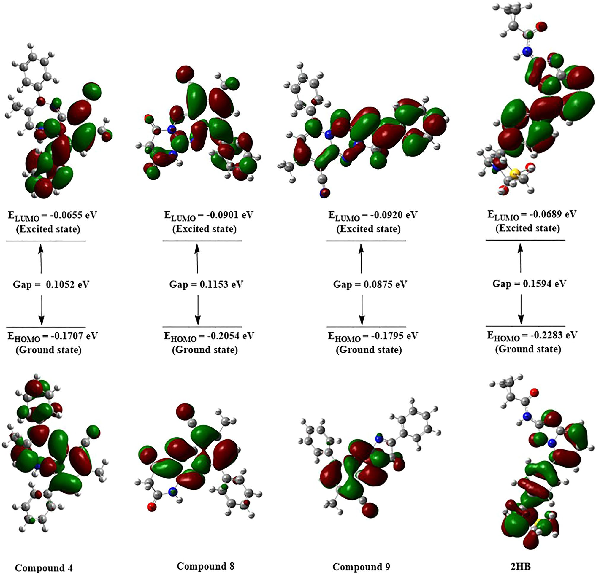
| Senyawa | Momen Dipol (µ, Debye) | E_HOMO (eV) | E_LUMO (eV) | Celah Pita Energi (ΔE, eV) |
|---|---|---|---|---|
| Senyawa 4 | 8.2089 | -0.1707 | -0.0655 | 0.1052 |
| Senyawa 8 | 9.7371 | -0.2054 | -0.0901 | 0.1153 |
| Senyawa 9 | 5.0329 | -0.1795 | -0.0920 | 0.0875 |
| Ligan 2HB (Ref) | 7.2947 | -0.2283 | -0.0689 | 0.1594 |
Data kuantum pada Tabel 3 mengungkap bahwa seluruh senyawa hasil sintesis (4, 8, dan 9) memiliki celah energi HOMO–LUMO yang jauh lebih sempit (0.0875–0.1153 eV) dibandingkan ligan referensi 2HB (0.1594 eV). Senyawa 9 mencatat celah terkecil (0.0875 eV), membuktikan bahwa molekul ini memiliki fleksibilitas transfer elektron dan kecenderungan donor-akseptor yang paling aktif saat berinteraksi dengan residu asam amino di situs aktif kinase.
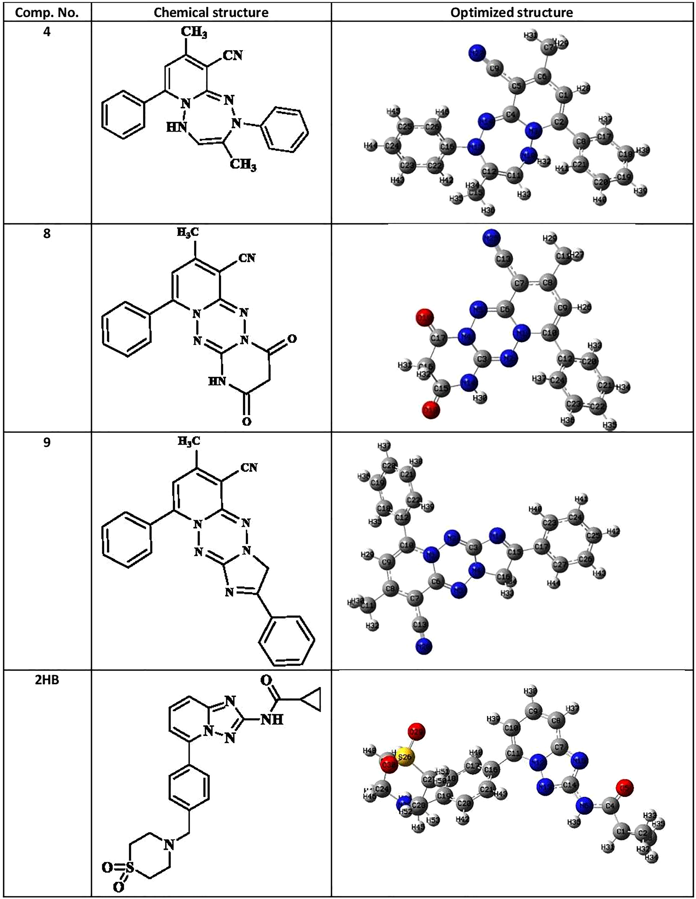
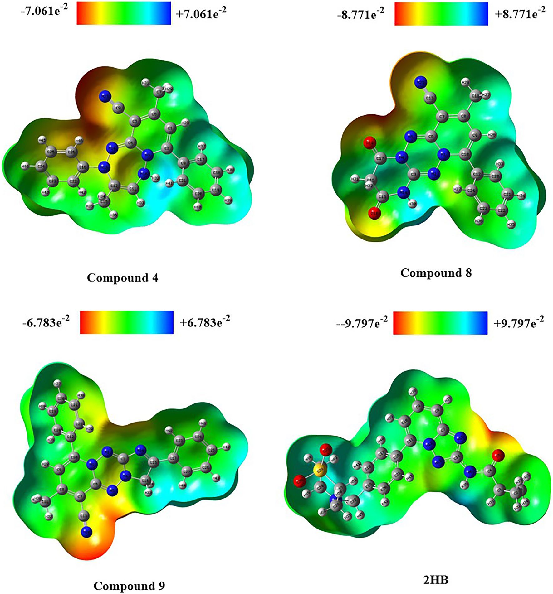
Peta Potensial Elektrostatik Molekuler (MEP) pada Gambar 12 memvisualisasikan gradien distribusi muatan: zona merah pekat terkonsentrasi di sekeliling atom-atom nitrogen cincin tetrazin dan gugus -C≡N, mengindikasikan situs afinitas utama untuk bertindak sebagai akseptor ikatan hidrogen dengan residu enzim donor seperti Leu 932 dan Lys 882.
06. Evaluasi ADME In Silico: Profil Farmakokinetika & "Drug-Likeness"
Keberhasilan molekul obat tidak hanya ditentukan oleh potensinya di cawan petri (in vitro), melainkan juga oleh kelayakan farmakokinetikanya (ADME: Absorption, Distribution, Metabolism, and Excretion). Analisis bioinformatika komputasional menggunakan modul SwissADME dan model Boiled-Egg dilakukan untuk mengevaluasi sifat kelayakan obat (drug-likeness) dari senyawa 4, 8, dan 9.
| Molekul | Bobot Molekul (MW ≤ 500) | Log P (Lipofilisitas ≤ 5) | TPSA (≤ 140 Ų) | Rotatable Bonds (NRB ≤ 10) | Kelarutan (Log S) | Akseptor H (HBA ≤ 10) | Donor H (HBD ≤ 5) | Pelanggaran Lipinski |
|---|---|---|---|---|---|---|---|---|
| Senyawa 4 | 353.42 | 4.73 | 61.81 Ų | 2 | -5.9 (Moderat) | 2 | 1 | 0 (Nol) |
| Senyawa 8 | 332.32 | 1.35 | 105.08 Ų | 1 | -3.45 (Larut) | 5 | 1 | 0 (Nol) |
| Senyawa 9 | 364.40 | 3.69 | 71.27 Ų | 2 | -5.17 (Moderat) | 4 | 0 | 0 (Nol) |
| Ligan 2HB (Ref) | 425.50 | 2.27 | 105.05 Ų | 6 | -3.31 (Larut) | 6 | 1 | 0 (Nol) |
Berdasarkan kriteria Lipinski's Rule of Five (Tabel 4), ketiga kandidat (4, 8, dan 9) mencatat nol pelanggaran (zero violations), membuktikan kelayakan permeabilitas membran sel dan bioavailabilitas oral yang sangat baik.
| Senyawa | Penetrasi Sawar Darah Otak (BBB) | Absorpsi Saluran Cerna (GI) | Substrat P-glikoprotein (Pgp) | Inhibisi CYP1A2 | Inhibisi CYP2C19 | Inhibisi CYP2C9 | Inhibisi CYP2D6 | Inhibisi CYP3A4 |
|---|---|---|---|---|---|---|---|---|
| Senyawa 4 | Ya (Tembus) | Tinggi | Bukan (No) | Ya | Ya | Ya | Ya | Tidak |
| Senyawa 8 | Tidak (Aman CNS) | Tinggi | Bukan (No) | Tidak | Tidak | Tidak | Tidak | Tidak |
| Senyawa 9 | Ya (Tembus) | Tinggi | Bukan (No) | Ya | Ya | Ya | Tidak | Tidak |
| Ligan 2HB (Ref) | Tidak | Tinggi | Ya (Substrat) | Tidak | Tidak | Ya | Tidak | Ya |
Profil farmakokinetika pada Tabel 5 menyingkap keunggulan kritis senyawa hasil sintesis dibanding ligan referensi 2HB:
- Bebas Hambatan Pompa Efluks P-Glikoprotein (Pgp): Ketiga senyawa (4, 8, dan 9) bukan merupakan substrat P-glikoprotein. Ini adalah keunggulan terapeutik raksasa dibandingkan obat referensi 2HB (yang merupakan substrat Pgp), karena sel tumor ganas sering kali mengalami resistensi obat kemoterapi (multidrug resistance / MDR) dengan memompa keluar obat via Pgp. Senyawa 4, 8, dan 9 mampu menetap di dalam sitoplasma sel kanker tanpa terefluks.
- Profil Keamanan Enzim Hepar Senyawa 8: Senyawa 8 tidak menghambat satu pun dari 5 isoform sitokrom P450 hati (CYP1A2, 2C19, 2C9, 2D6, 3A4). Hal ini meminimalkan risiko interaksi obat yang merugikan (drug-drug interactions) jika diresepkan bersamaan dengan rejimen kemoterapi kombinasi lain. Senyawa 8 juga tidak menembus sawar darah otak (BBB), menjauhkannya dari efek samping neurotoksisitas sistem saraf pusat.
- Potensi Sasaran Metastasis Otak (Senyawa 4 dan 9): Kemampuan senyawa 4 dan 9 menembus sawar darah otak (BBB permeant) membuka prospek menarik untuk dikembangkan sebagai agen terapeutik kanker otak primer (seperti glioblastoma) atau metastasis intrakranial dari kanker kolon dan payudara.
Kombinasi sintesis hijau bebas pelarut dengan skrining in vitro NCI-60 dan pemodelan kuantum-molekuler berhasil mengidentifikasi Senyawa 9 (imidazopiridotetrazin) dan Senyawa 8 (piridopirimidinotetrazin) sebagai lead compounds berdaya hambat tinggi terhadap kanker kolon dan leukemia. Dengan afinitas penambatan JAK2 yang setara dengan obat referensi klinis, celah HOMO-LUMO sempit, ketiadaan efluks P-glikoprotein, dan kepatuhan penuh aturan Lipinski, heterosiklik kaya nitrogen ini menjadi kandidat obat antikanker bertarget generasi baru yang sangat menjanjikan untuk optimasi praklinis lebih lanjut.
- Judul Asli: Synthesis of pyrido-annelated [1,2,4,5]tetrazines, [1,2,4]triazepine, and [1,2,4,5]tetrazepines for anticancer, DFT, and molecular docking studies
- Penulis: Aisha Y. Hassan, Sara N. Shabaan, Samiha A. El-Sebaey, Eman S. Abou-Amra*
- Afiliasi: Faculty of Science (Girls) & Faculty of Pharmacy (Girls), Al-Azhar University, Kairo, Mesir
- Jurnal: Scientific Reports, Vol. 13, Article 5585 (2023)
- Penerbit: Springer Nature / Nature Portfolio
- DOI: 10.1038/s41598-023-32421-x
- Sintesis Kimia: Solvent-free Thermal Fusion (Konsep PASE, Rendemen 67–89%)
- Uji Biologis: Skrining 60 Lini Sel Kanker Manusia NCI-60 (Dosis 10 µM)
- Penambatan Molekuler: MOE 2015.10 terhadap Janus Kinase-2 (JAK2, PDB ID: 4P7E)
- Kalkulasi Kuantum: Gaussian 09, DFT B3LYP/6-31G(d,p) (FMO & MEP)
- Farmakokinetika In Silico: SwissADME, Aturan Lipinski & Model Boiled-Egg